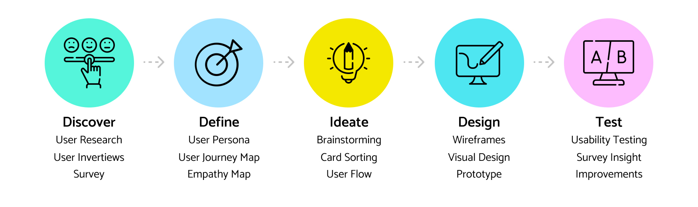
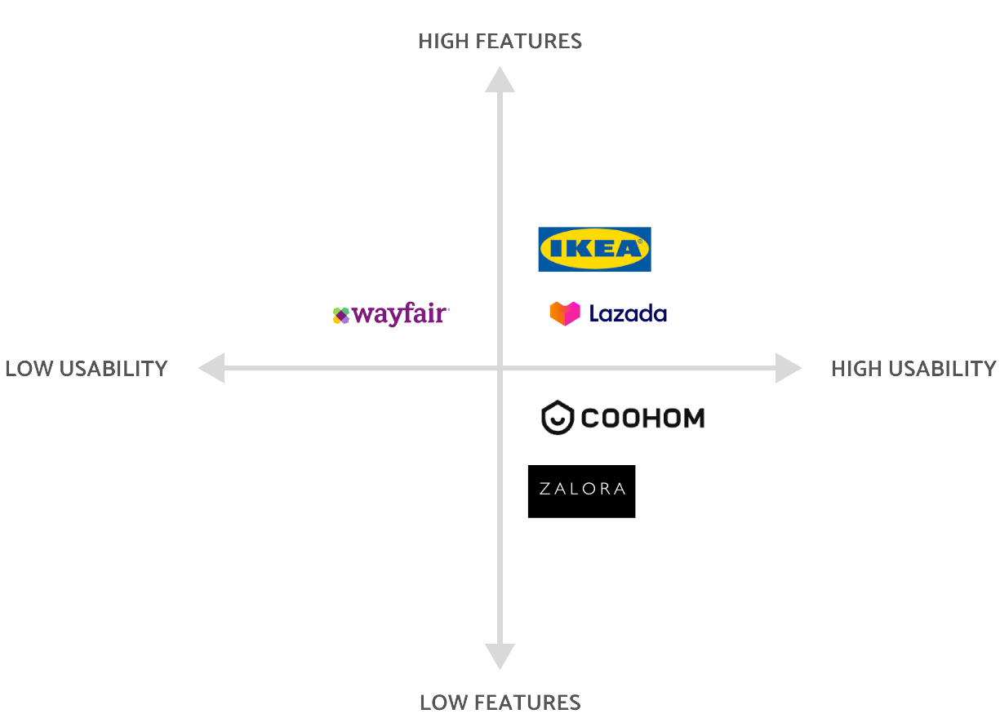
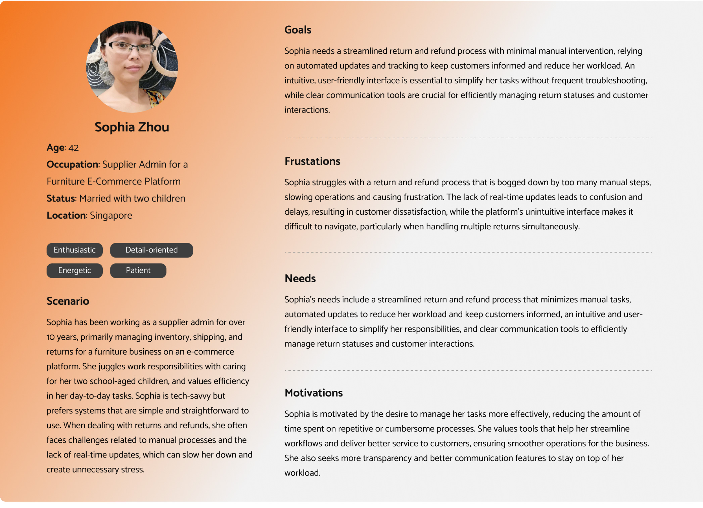
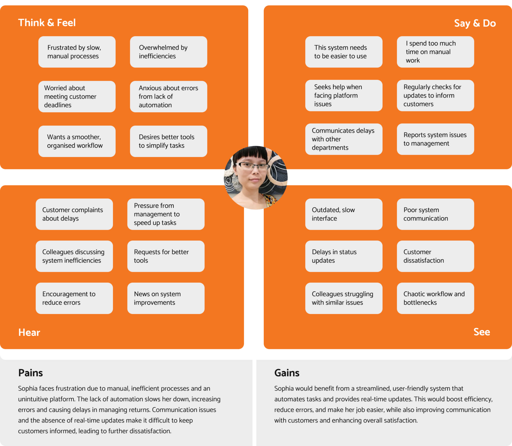
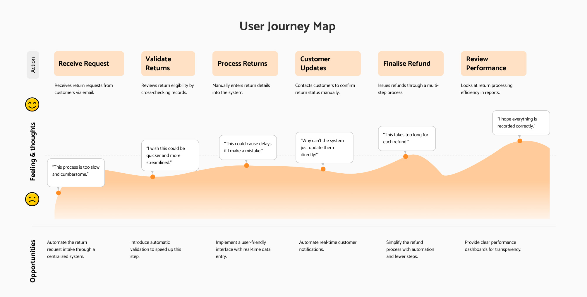
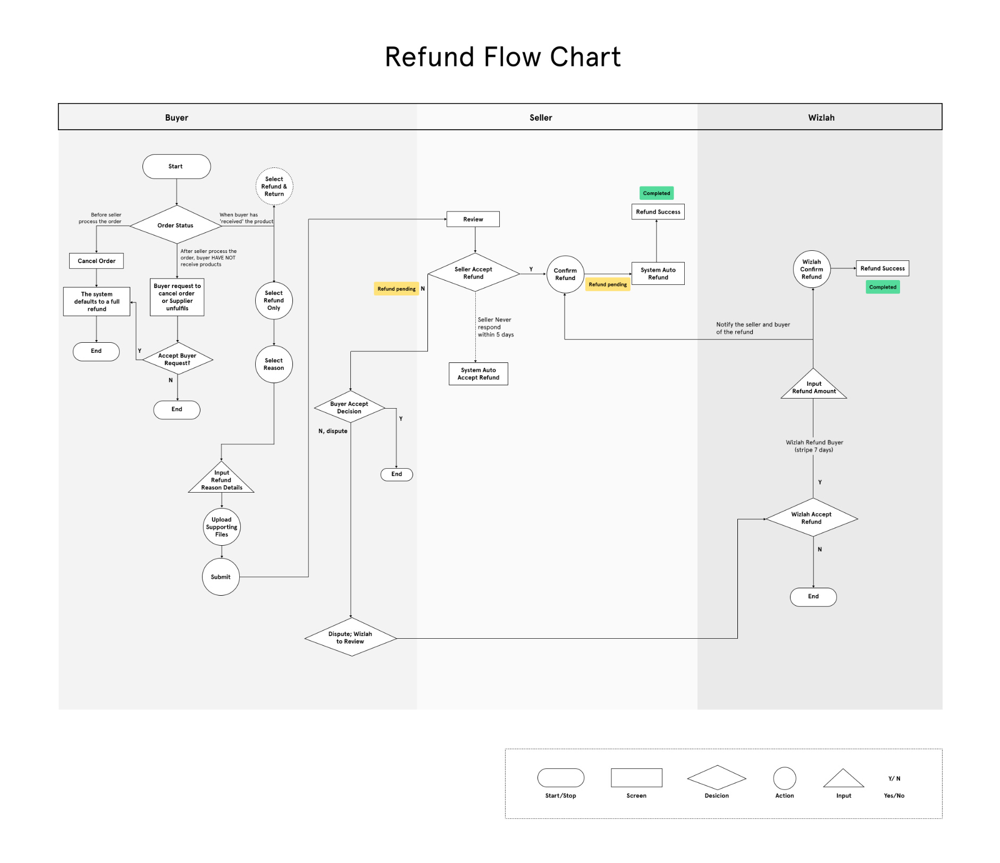
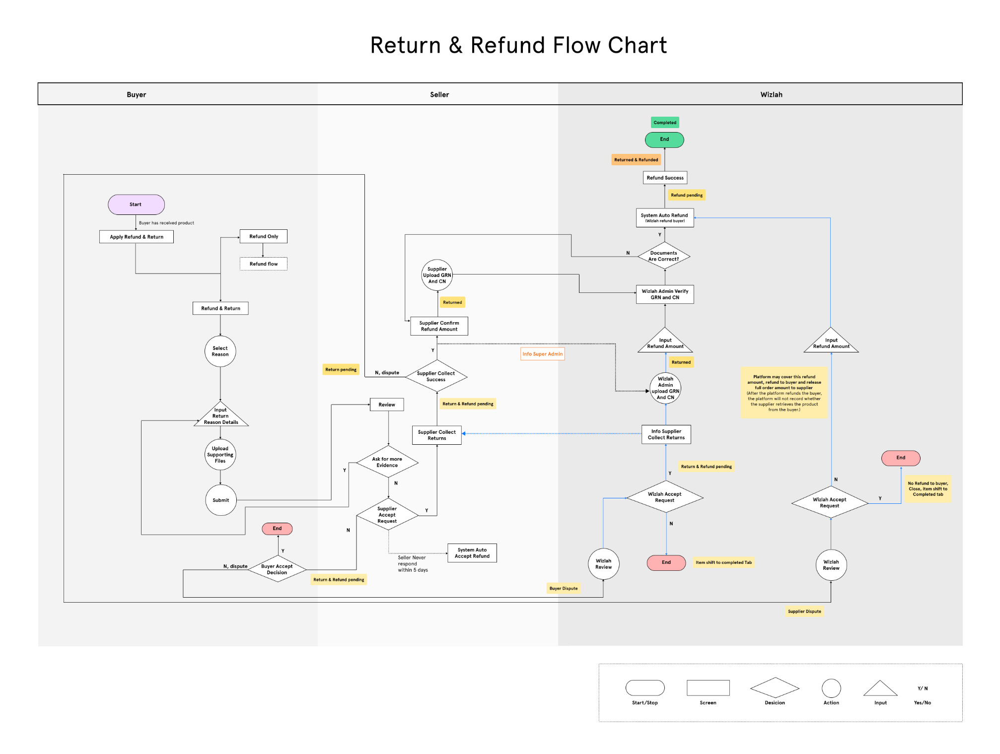
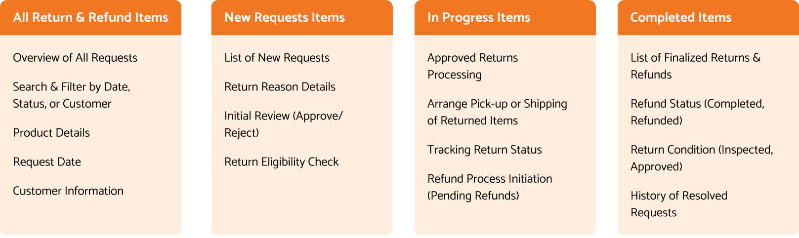
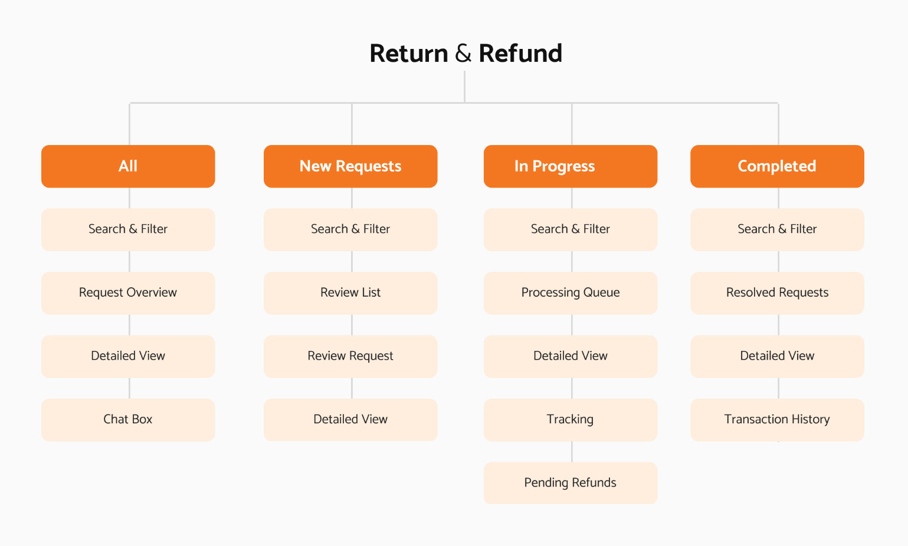
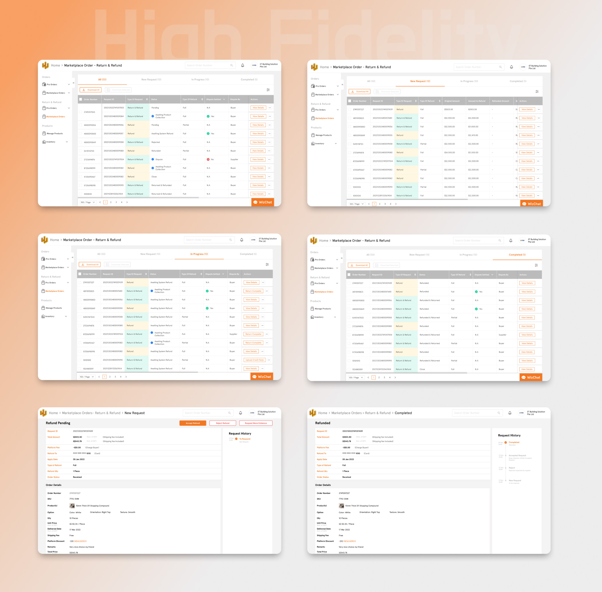

Wizlah Supplier Admin
Return & Refund
Wizlah Supplier platform simplifies the management process for suppliers by providing an all-in-one solution for handling returns, refunds, and order updates. Suppliers can manage orders, track returns, and communicate with customers, all through Wizlah's integrated supplier admin platform.
About Project
Study overview
This case study details the development of a new return and refund process for an interior design e-commerce platform, aimed at simplifying the user experience and increasing customer satisfaction.This case study details the development of a new return and refund process for an interior design e-commerce platform, aimed at simplifying the management experience for suppliers and increasing customer satisfaction.
Problem Statement
Suppliers found the existing process to be cumbersome, resulting in high customer service call volumes and increased dissatisfaction. This inefficiency not only burdened the customer support team but also impacted the overall supplier operations. The complex process led to frequent errors and delays, further exacerbating supplier frustration and affecting customer satisfaction.
Solution
User-friendly return and refund interface designed to minimize complexity and promote efficient self-service for suppliers. This interface will simplify the administrative tasks involved in processing returns and refunds, reduce manual errors, and enhance overall operational efficiency. By offering clear, actionable steps and real-time updates, the system will enable suppliers to manage returns and refunds with greater ease and accuracy, ultimately improving their workflow and reducing the need for customer support interventions.
Design Process
Employed a human-centered design approach to ensure that the solution directly addresses user needs and pain points. Employed a human-centered design approach to ensure that the solution directly addresses user needs and pain points.
Design Thinking Process
User Research
Qualitative Research
In qualitative research aimed at refining the return and refund processes for supplier admins, our objective is to gain a deep understanding of their experiences, uncover any challenges they face, and collect valuable insights for enhancement. We use targeted questions during interviews and focus groups to achieve this, focusing on their specific needs and workflow issues.
- Can you describe the current process for handling returns and refunds from your perspective?
- What are the biggest challenges you face with the current return and refund system?
- How would you describe the usability of the current return and refund interface?
- What difficulties do you encounter when using the existing system?
- How effectively does the current system communicate the status of returns and refunds?
- Are there any gaps in the information provided that impact your ability to manage returns and refunds efficiently?
- How are decisions made regarding whether a return is approved or denied?
- Do you have adequate controls and criteria to make these decisions effectively?
- What features or improvements would you like to see in a new return and refund system?
- How does the current return and refund process impact your overall workflow and productivity?

Interview insights
Supplier admins consistently reported frustration with the inefficiency of the current return and refund process, citing its complexity and lack of automation as major pain points. The system requires too many manual steps, slowing down operations and increasing workload. Usability issues were also prevalent, with many describing the interface as unintuitive and difficult to navigate. Communication gaps between departments and with customers further exacerbated delays and confusion. Admins expressed a strong desire for a centralized dashboard to streamline tracking and management, along with automated status updates to reduce errors and improve efficiency. These insights will inform critical improvements to the process, focusing on automation, interface redesign, and better communication.Based on quantitative research, frequent returns highlight the need for a streamlined process. Common reasons for returns, such as inaccurate product descriptions and defects, indicate areas for improvement. Users demand clear, accessible return policies and prefer a simple, efficient return process with quick refunds. Real-time status updates and multiple initiation methods are crucial. Clear instructions are essential to avoid frustration. Implementing these insights will create a user-friendly return and refund flow, enhancing user satisfaction and retention.
Competitive analysis
Reviewed some leading competitors to benchmark best practices and identify gaps.

Define
A user persona is a fictional representation of a typical supplier admin, highlighting attributes like their role, daily tasks, challenges, and goals in managing processes such as returns and refunds. It helps designers and developers empathize with the supplier’s needs, ensuring that the tools and systems created effectively support their workflow. By focusing on this perspective, the development process becomes centered around improving the efficiency, usability, and satisfaction of supplier admins within the platform.
User persona
Empathy mapping
Ideate
Scenario
Crafted scenario Sophia receives multiple return requests from customers who report damaged furniture or items that don’t match the descriptions on the website. With the current manual system, Sophia has to navigate through a clunky interface, update records manually, and communicate with customers to confirm return eligibility. This process is slow, causing delays and increasing customer dissatisfaction. Sophia needs an efficient way to handle these requests quickly, keep customers informed with real-time updates, and reduce the manual workload.
User journey map
Comprehensive diagrams outlined every phase of the user’s experience, from initial decision-making to the final outcome, showcasing emotional peaks and challenges along the way.

User flow
Developed a simplified flow with fewer steps and clearer options, designed to efficiently guide users through the return process.


Card Sorting
Conducted card sorting to define and organize return and refund management steps into clear categories, ensuring a more intuitive and efficient workflow for handling returns.

Information Architecture
Utilized card sorting with actual users to define and organize the reasons for returns into intuitive categories, making the selection process straightforward.

Design
High Fidelity wireframes
After conducting extensive research and brainstorming, I started by sketching low-fidelity wireframes for the supplier admin platform on paper. I then moved to designing high-fidelity wireframes in Figma, refining the platform’s interface and functionality. Throughout the process, I identified and incorporated additional screens to ensure a complete and seamless experience for supplier admins managing returns and refunds.

TEST
Usability testing
Usability testing was conducted to assess the functionality, ease of use, and overall experience of the supplier admin return and refund flow. The goal was to identify any pain points, inefficiencies, or areas for improvement in the process to ensure that supplier admins could manage returns and refunds smoothly.
Assigned Task
Some sample tasks:- Log in to the supplier admin dashboard and locate the “All Return & Refund Items” section.
- Review and process a new return/refund request, including approving/rejecting the request and communicating with the customer.
- Track the progress of an in-progress return item, including arranging a product pick-up and updating the status.
- Complete a return/refund by finalising the refund process and reviewing the completed request history.
Test objective
The objective was to determine whether the supplier admin could:- Navigate the return and refund flow efficiently.
- Process return/refund requests without confusion or delay.
- Utilise the tools provided to streamline operations (e.g., communication with customers, tracking).
- Ensure that the design supports real-time updates and quick access to necessary information.
Findings
The return and refund approval process involved too many steps, leading to user frustration. Simplifying the steps for quicker approvals and returns was noted as a necessary improvement. While real-time updates were available, testers wanted these updates to be more prominent, with more visible notifications or alerts to keep them informed at every stage of the process. These findings helped refine the return and refund flow design to prioritize clarity, efficiency, and ease of communication for supplier admins.
For the revised full version of the high-fidelity wireframes, please click here